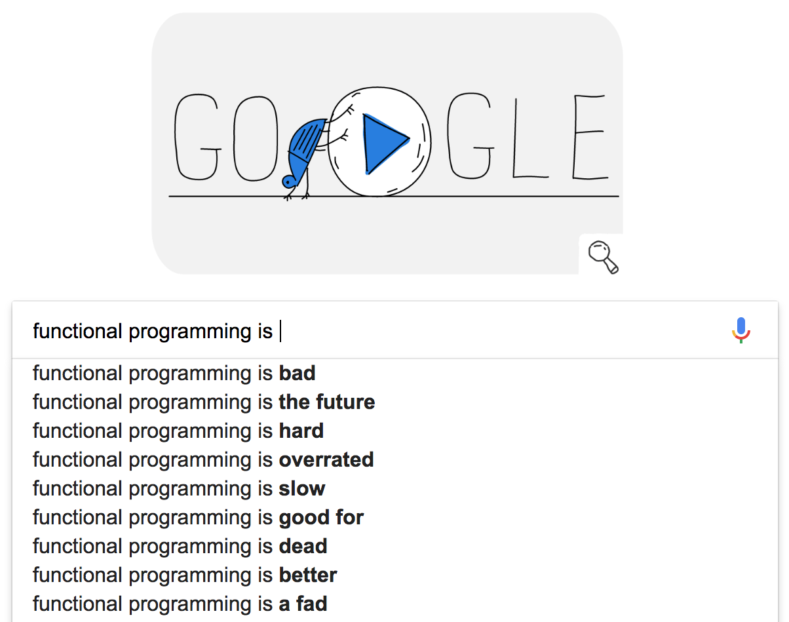

aaaa
### Why we do Functional Programming at REA Group
### WTF is _Functional Programming_? ##### Let's ask Google
#### 🤔 🤔 🤔 
Generally, Functional Programming languages will have a strong emphasis on: - Purity - Totality - Determinism
# Purity > A 'pure' function is a function where the return value is only determined by its input values, without observable 'side effects'.
# Is
## Really Cool